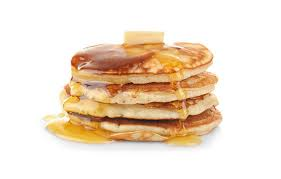

Description
Pancakes are a classic breakfast dish that are soft, fluffy, and quick to make. They’re perfect for lazy mornings or weekend brunch.
Serve them with syrup, fruit, or butter for a delicious start to the day.
Ingredients
- All-purpose flour
- Milk
- Egg
- Sugar
- Baking powder
- Butter or oil
- Salt
Steps on how to cook pancake
- Mix flour, sugar, baking powder, and salt in a bowl.
- Whisk in milk and egg until smooth.
- Heat a lightly greased pan over medium heat.
- Pour batter onto the pan to form pancakes.
- Cook until bubbles form, then flip.
- Cook until golden brown and serve warm.
Back To Homepage